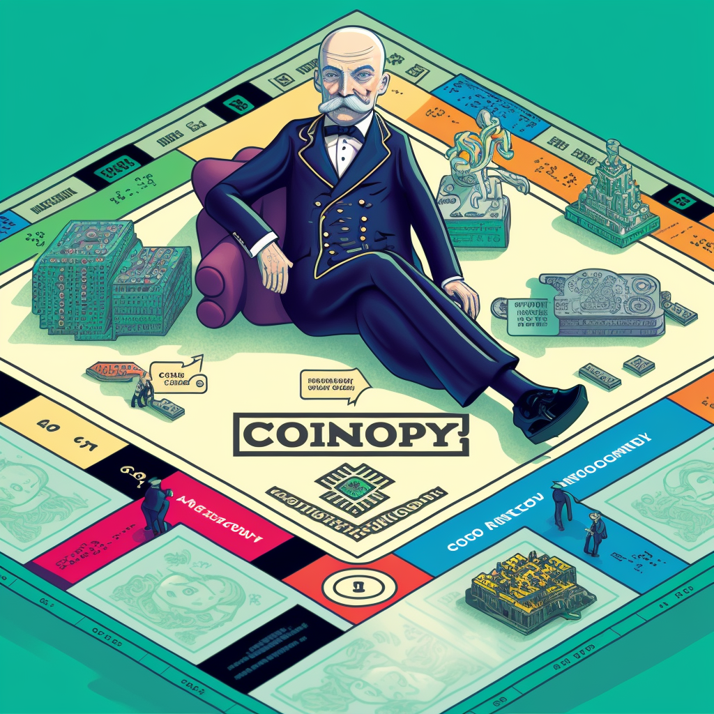

O Jogo do Monopolismo
Se o Estado tiver incentivos muito mais fortes para aumentar seu poder e influência do que para ser enxuto e minimizar sua intervenção na economia, isso pode levar a vári...
Veja o universo contraintuitivo do anarquismo e libertarianismo com ajuda de Inteligencia Artificial
Se o Estado tiver incentivos muito mais fortes para aumentar seu poder e influência do que para ser enxuto e minimizar sua intervenção na economia, isso pode levar a vári...

Antes do Bitcoin, já haviam sido feitas diversas tentativas de criar uma moeda digital que pudesse quebrar o monopólio estatal sobre as moedas. No entanto, essas tentativas acabaram sendo frustradas por divers...

O princípio de não agressão (PNA) é uma doutrina filosófica e política que sustenta que a violência física iniciada contra outra pessoa ou sua propriedade é inaceitável, a menos que seja usad...
Culpar um filósofo por uma ideia "errada" é a tentativa de eximir a responsabilidade de cada indivíduo que repe...

Os anarquistas acreditam que as pessoas são capazes de se organizar de forma voluntária e cooperativa, pois boas ideias não necessitam a forç..

Existem diversos tipos de profissionais no mercado de trabalho, e uma diferença importante entre eles é a especialização ou a abrangência de conhecimento. Por um lado, existem os especialis...
Existem diversas teorias sobre as causas dos ciclos econômicos, incluindo fatores como a demanda agregada, a oferta agregada, a inflação, o crédito, o investimento e os ciclos de inova...
A liberdade é o direito de tomar suas próprias decisões e agir de acordo com sua vontade, desde que não prejudique outras pessoas. No contexto do uso de drogas, a liberdade inclui o direi...
A ideia de que computadores são como bicicletas para a mente se refere ao fato de que os computadores são ferramentas que podem ajudar a expandir e aprimorar nossas capaci...

Neo, o personagem principal de Matrix, e Alice, a protagonista de Alice no País das Maravilhas, têm muitas relações interessantes entre si. Ambos os personagens vivem em mundos fantásticos e estran...

Anomia é um termo usado para descrever a sensação de falta de regras ou normas sociais. É um estado social e psicológico no qual as normas sociais são percebidas como incertas, ambiguas ou não existentes. Isso pode lev...
"Chaotic good" é um termo utilizado para descrever uma determinada alinhamento moral em jogos de RPG (Role-playing game) e ficção. Esse alinhamento geralmente é atribuído a personagens que são motiva...

???...